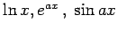
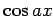
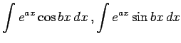
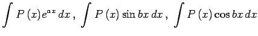
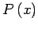

Inhalt Index DeskTop Bronstein

 Integralrechnung Unbestimmtes Integral Integration weiterer transzendenter Funktionen
Integralrechnung Unbestimmtes Integral Integration weiterer transzendenter Funktionen


Wenn der Integrand Logarithmen, inverse trigonometrische Funktionen, inverse Hyperbelfunktionen oder Produkte von xm mit  oder  enthält, kann die Lösung durch einfache oder mehrfache Anwendung der partiellen Integration herbeigeführt werden.
In einigen Fällen führt die wiederholte Anwendung der partiellen Integration wieder auf das ursprünglich gegebene Integral. Dann wird seine Berechnung auf die Lösung einer algebraischen Gleichung zurückgeführt. Auf diese Weise werden z.B. die Integrale  berechnet, wozu eine zweimalige partielle Integration erforderlich ist. Als Faktor u wird in beiden Fällen die Funktion des gleichen Typs gewählt, also entweder die Exponential- oder die trigonometrische Funktion.
Die partielle Integration wird auch in den Fällen  eingesetzt, wobei  ein Polynom ist.